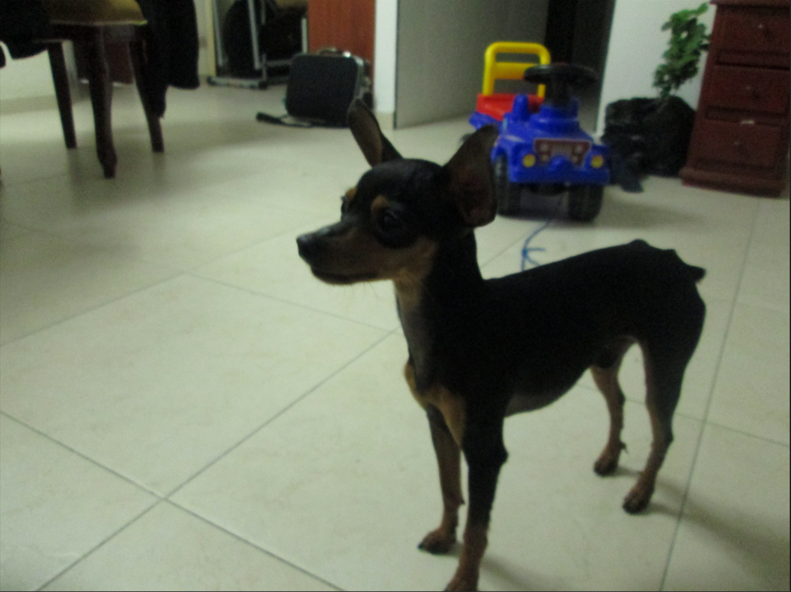
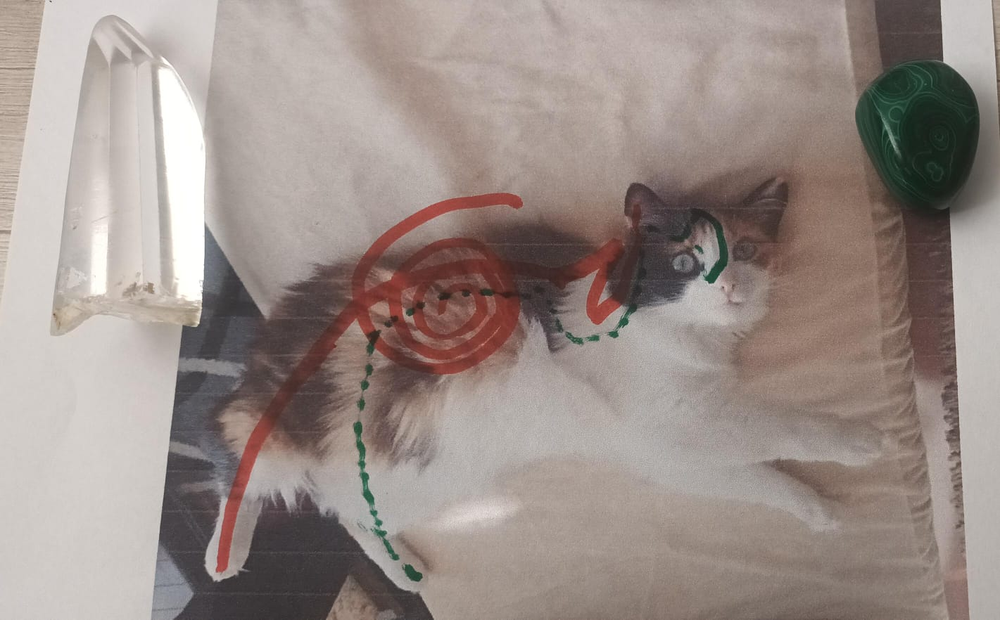
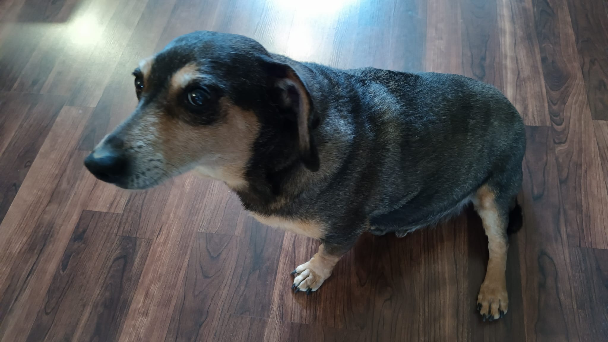
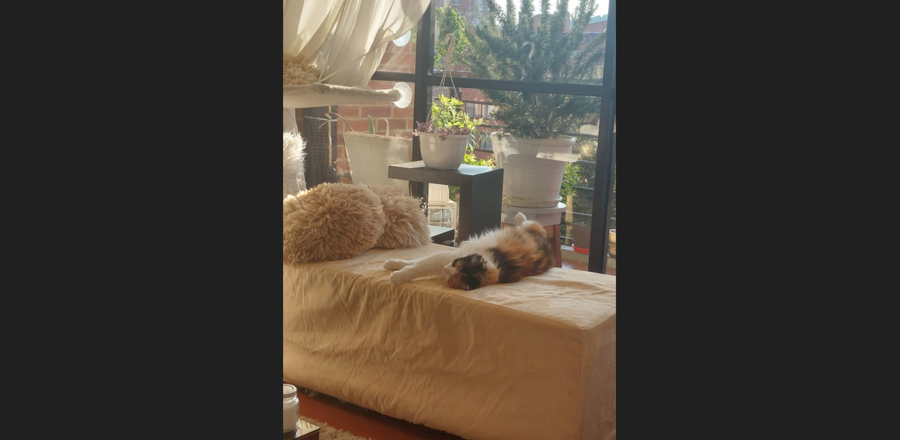
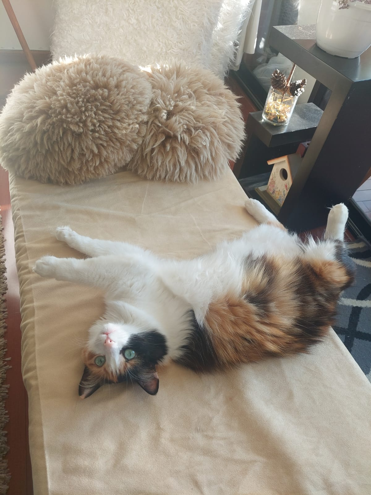
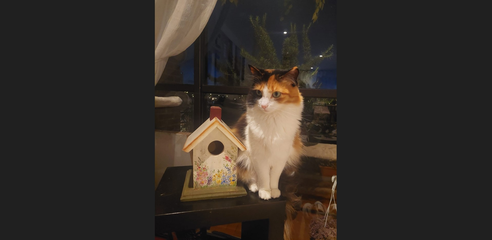
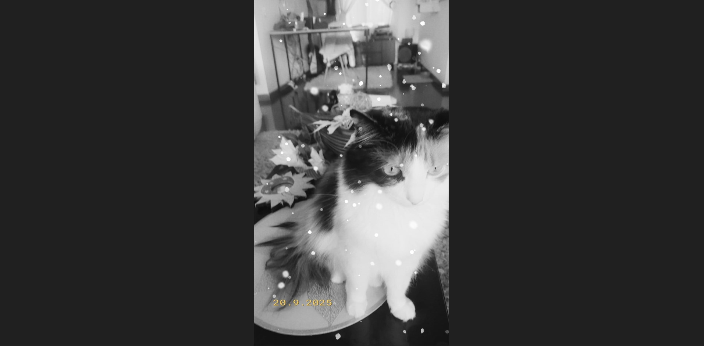
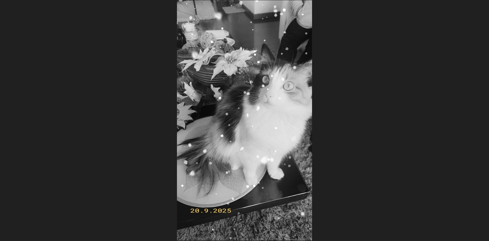

¿Qué es el Reiki?
REIKI ANGELICAL
REI: significa energía del Universo.
Ki: es energía vital que está dentro del organismo. Lo tienen todos los seres vivos: humanos, animales, plantas, e incluso las piedras como los cuarzos, que poseen una energía especial que también nos sirve.
El objetivo de una sesión de Reiki es canalizar la energía universal.
No es la energía del reikista, es la energía Pura del Universo.
La magia surge al conectar la energía universal con la energía alegre, divertida y sanadora de los Ángeles.
El ángel es real, existe: no importa que no lo veamos con nuestros ojos físicos, lo percibimos con nuestros sentimientos y vivencias.
Ellos nos generan sensaciones y sentimientos positivos.
Imagina bajar una guía y energía del cielo a la tierra, dejar que inunde tu cuerpo y se quede en tus células.
Si a estos ingredientes mágicos agregamos respuestas a nuestras inquietudes mediante la canalización de mensajes con las cartas, la experiencia se vuelve aún más enriquecedora.
Nuestros peluditos también tienen chakras que se pueden equilibrar y ayudar a sanar: perros, caballos, gatos, conejos, aves.
Siempre recomiendo que también lo realice el humano, porque al equilibrarse, ayuda a equilibrar a su mascota.
💗 Si se te pierde tu peludito, también te ayudo.
El Reiki se basa en 5 principios y puede ser practicado por cualquier persona entrenada.
Además, puede combinarse con la energía angélica para potenciar sus efectos.
Reiki + Ángeles: Una Experiencia Divina
Durante una sesión, invoco la presencia de los Arcángeles para guiar la energía y trabajar profundamente en lo que necesitas sanar.
La combinación crea una experiencia amorosa, protectora y transformadora que va más allá de lo físico.
¡Cada sesión es única! Porque cada alma necesita una luz diferente.
Reiki para Mascotas
Nuestras mascotas también sienten, aman y sufren. El Reiki es una herramienta amorosa y no invasiva que ayuda a equilibrar su energía, aliviar el estrés, y acompañar procesos de sanación física o emocional.
Ideal para perros, gatos y otros animales que hayan pasado por cirugías, traumas, ansiedad por separación, cambios de hogar o enfermedades.
Durante las sesiones, canalizo energía universal con amor y respeto, creando un espacio de calma y bien-estar para tu compañer@ de cuatro patas.
Beneficios del Reiki en animales
- 🐶 Reducción del estrés y la ansiedad
- 🐱 Aceleración en procesos de recuperación
- 🐾 Fortalecimiento del vínculo humano-animal
- 🕊️ Alivio en etapas terminales o de transición
El Reiki también beneficia a nuestros amigos animales. Aquí algunas fotos:









💗 Si deseas agendar una sesión para tu mascota,
contáctame
. Será un honor acompañarlos en su camino de sanación.